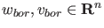
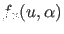
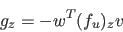

In the toolbox fold curves are computed by minimally extended defining systems
cf. [22], §4.1.2.
The fold curve is defined by the following system
where
 , while is obtained by solving
, while is obtained by solving
and
 are chosen such that the matrix in
(56) is nonsingular.
An advantage of this method is that the derivatives of can be obtained
easily from the derivatives of :

where  is a state variable or an active parameter and w is obtained by solving
is a state variable or an active parameter and w is obtained by solving
This method is implemented in the curve definition file limitpoint.m.